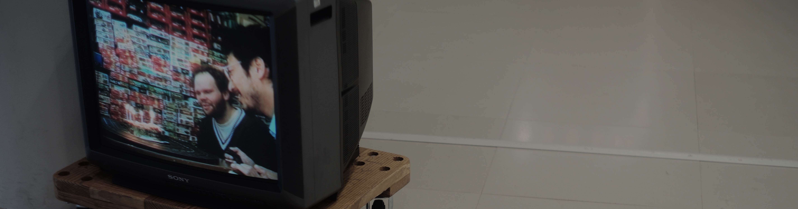
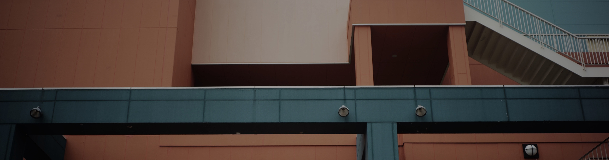
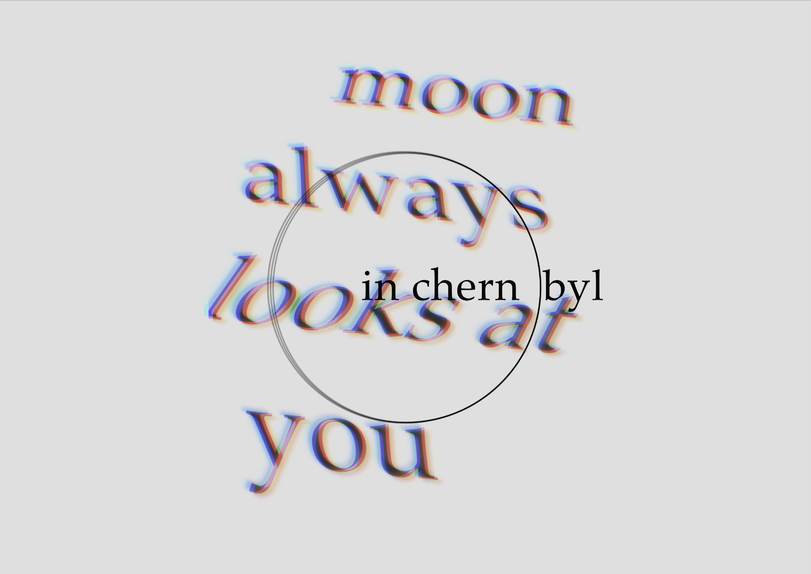
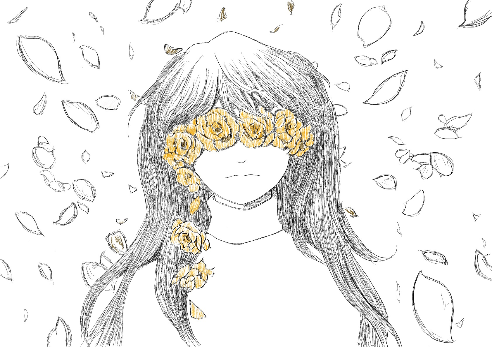

service
windows app

web pages

photographs
illustration
music
works


profile
joooya
1993 Born in Utsunomiya City
Lived in Shizuoka - HongKong - Nagoya
Graduated from Nagoya University of Foreign Studies
Studied abroad to Queensland, Australia.
My creativity is thanks to confronting diversity
while my life with migration.
other activities
twitter :
@joooyadayo
blog :
Under Constructing...